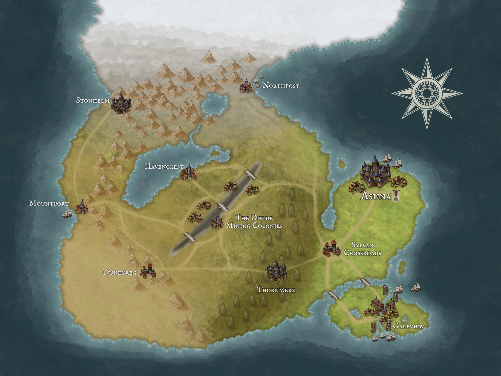

Welcome Adventurer!
Looking to join the guild? Fill out this questionaire.
About the Guild
Located just south of the Captial at Sylvan Crossroads, the Adventurer's Guild offers its services to all who seek them. Contracts placed with the guild are distributed to the best adventurers in the land, ensuring that the job you need done is done right. We at the Adventurer's Guild cater to all needs as long as the gold is right. Need a dragon slain? Have a shipment of goods heading to Galeview that needs some muscle? We have the right adventurer for the job.
